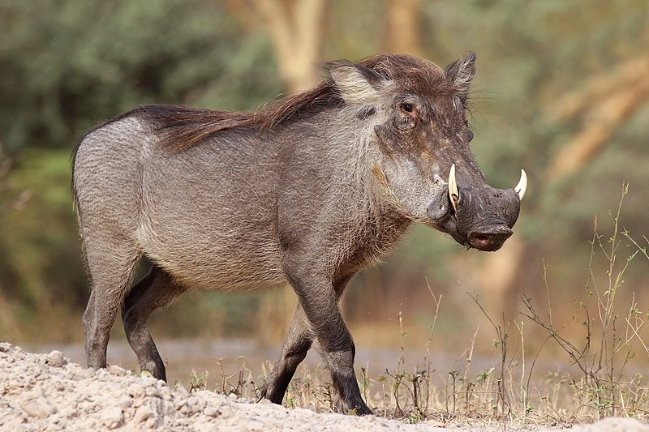

WAETHOGS
Phacochoerus is a genus in the family Suidae, commonly known as warthogs (pronounced wart-hog). They are pigs who live in open and semi-open habitats, even in quite arid regions, in sub-Saharan Africa. The two species were formerly considered conspecific under the scientific name Phacochoerus aethiopicus, but today this is limited to the desert warthog, while the best-known and most widespread species, the common warthog (or simply warthog), is Phacochoerus africanus.
Elephants are herbivorous and can be found in different habitats including savannahs, forests, deserts and marshes. They prefer to stay near water.
WHERE WILL YOU FIND THEM
You will find the elephants at pen E22, right next to the amphitheatre.